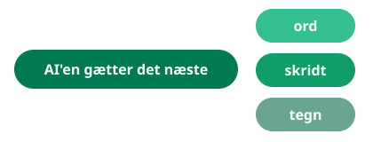

Forstå AI: historien og ordene
Kursets eneste rene teorimodul. Læn dig tilbage. Nu hænger vi begreber på alt det, du allerede har prøvet med hænderne.

Hvorfor teori til sidst?
De fleste kurser starter her. Vi slutter her, med vilje. Nu har du selv bygget en app, ledet en AI-agent, skrevet med promptmønsteret, sat AI ind i et flow og hørt en rapport som podcast. Det betyder, at hvert begreb i dette modul kan pege tilbage på noget, du selv har oplevet. Teori uden erfaring er udenadslære. Teori efter erfaring er genkendelse.
Historien i elleve nedslag
AI er ikke opfundet i 2022. Det, der skete i 2022, var, at 70 års forskning pludselig fik et chatvindue.
| År | Hvad skete der |
|---|---|
| 1950 | Alan Turing stiller spørgsmålet »kan maskiner tænke?« og foreslår en test: kan en maskine i samtale narre et menneske til at tro, den også er et menneske? |
| 1956 | Ordet »artificial intelligence« opfindes på en forskningskonference på Dartmouth College. Forventningen er, at problemet løses på en sommer. Det tager lidt længere. |
| 1960 til 1990 | Ekspertsystemer bygges som håndskrevne regler: »hvis feber og udslæt, så overvej mæslinger«. De rammer et loft, skuffelsen breder sig, og bevillingerne fryser til i perioder, der i dag kaldes AI-vintre. |
| 1997 | IBM's skakcomputer Deep Blue slår verdensmesteren Garry Kasparov. Maskinen vinder med rå beregningskraft, ikke med forståelse. |
| 2012 | Gennembruddet for dyb læring: neurale netværk, der lærer af eksempler i stedet for regler, knuser konkurrencen i billedgenkendelse. Nøglen er data i enorme mængder og hurtige grafikkort. |
| 2016 og 2017 | DeepMinds AlphaGo slår verdensmesteren Lee Sedol i go, et spil der ansås for at ligge årtier ude i fremtiden. Året efter kommer AlphaZero, som lærer skak, go og shogi udelukkende ved at spille mod sig selv, uden menneskelig viden overhovedet, og på få timer bliver stærkere end alle tidligere programmer. Hvor Deep Blue vandt med rå kraft, vinder AlphaZero med noget, der ligner intuition. |
| 2017 | Google-forskere udgiver artiklen »Attention Is All You Need« om en ny netværksarkitektur: transformeren. Den viser sig at være usædvanligt god til sprog og er motoren i stort set alt, du har brugt på dette kursus. |
| 2020 | Samme tilgang forlader spillebrættet: DeepMinds AlphaFold løser proteinfoldningsproblemet, en 50 år gammel gåde i biologien om, hvordan et proteins form kan forudsiges ud fra dets byggesten. Strukturerne for over 200 millioner proteiner lægges frit tilgængelige for forskere, og i 2024 udløser arbejdet Nobelprisen i kemi. AI går fra at vinde spil til at drive videnskab. |
| 2022 | ChatGPT lanceres i november og når 100 millioner brugere på to måneder. Teknologien var flere år gammel. Det nye var, at alle pludselig kunne tale med den. |
| 2023 til 2024 | Modellerne bliver multimodale (tekst, billede, lyd og video i samme model) og får værktøjer i hænderne som agenter. Det er dét skifte, du mødte i modul 2 og 4. Samtidig kommer reguleringen, med EU's AI-forordning forrest. |
| 2025 og frem | Modellerne lærer at »tænke sig om«, før de svarer, og agenter begynder at udføre rigtigt arbejde i timevis ad gangen. Debatten skifter fra »kan den skrive en mail?« til »hvor meget af et vidensjob kan den overtage, og hvor hurtigt?«. Matt Shumers essay Something Big Is Happening fra februar 2026 bliver set over 80 millioner gange og gør netop dét spørgsmål til samtaleemne langt uden for teknologikredse. |
Kilder til tidslinjen: Turings artikel fra 1950, Dartmouth-konferencen, AI-vintrene, IBM om Deep Blue, gennembruddet i 2012, AlphaZero-artiklen i Science, transformer-artiklen, Nobelprisen 2024, Reuters om ChatGPTs vækst, EU-Kommissionen om AI-forordningen og Wikipedia om Something Big Is Happening
Se filmen: The Thinking Game
Vil du have historien om AlphaZero og AlphaFold fortalt indefra, så findes den som dokumentarfilm. The Thinking Game er optaget over fem år bag dørene hos DeepMind i London og følger grundlæggeren Demis Hassabis og hans hold på rejsen fra brætspillene til proteinfoldningen, der endte med en Nobelpris. Filmen kræver ingen teknisk baggrund og er noget af det bedste, du kan se for at forstå, hvad der driver feltet, både videnskabeligt og menneskeligt.
Filmen varer halvanden time og ligger gratis på YouTube: se The Thinking Game her. Engelsk tale, og du kan slå undertekster til i afspilleren.
Kilde: Googles annoncering af den gratis visning
Læsetip: Something Big Is Happening
Vil du mærke, hvordan debatten lyder lige nu, så læs Matt Shumers essay Something Big Is Happening fra februar 2026. Shumers påstand er, at AI er ved at forandre vidensarbejde langt hurtigere, end de fleste tror, at agenter allerede kan arbejde selvstændigt i timevis, og at man bør lære værktøjerne nu i stedet for at vente. Essayet er læst af flere end 80 millioner og er blevet et fælles referencepunkt, også for dem, der er uenige.
Og uenighed er der: kritikere kalder essayet overdrevet og påpeger, at store omvæltninger historisk tager længere tid, end de føles til at ville. Læs f.eks. Fortunes dækning og Forbes' kritik som modvægt. Det er præcis den slags påstand mod modpåstand, du efter dette modul selv kan tage stilling til.
Hvad er det egentlig, der sker derinde?

Typer af AI: lær at skelne
Ordet AI dækker over vidt forskellige teknologier, og meget forvirring i debatten skyldes, at man taler om hver sin slags. Tre skel rækker langt i de fleste samtaler.
Ordbogen: ordene du skal kende
Dem her støder du på i artikler, leverandørmøder og frokostdiskussioner. Nu har du selv prøvet det meste af det.
| Ord | Betydning |
|---|---|
| AI | Samlebetegnelse for software, der løser opgaver, som normalt kræver menneskelig intelligens. Et meget bredt begreb, brugt om alt fra skakprogrammer til ChatGPT. |
| Maskinlæring | Den gren af AI, hvor systemet lærer mønstre af eksempler i stedet for at følge håndskrevne regler. |
| Neuralt netværk | Den beregningsmodel, moderne AI bygger på. Løst inspireret af hjernens neuroner, i praksis matematik i mange lag. |
| Sprogmodel (LLM) | Et neuralt netværk trænet på tekst til at forudsige det næste ord. ChatGPT, Claude, Gemini og Copilot er alle sprogmodeller med hver sin indpakning. |
| Token | Den bid, modellen læser og skriver i. Cirka et ord eller et halvt. Priser og begrænsninger opgøres ofte i tokens. |
| Kontekstvindue | Så meget modellen kan have i hovedet ad gangen: din samtale, dine dokumenter, dens egne svar. Løber det fulde, glemmer den begyndelsen. |
| Prompt | Din instruks til modellen. Kurset har givet dig mønsteret: rolle, kontekst, opgave og format. |
| Hallucination | Et selvsikkert, men opdigtet svar. En indbygget egenskab ved teknologien, ikke en fejl der forsvinder i næste version. |
| Kildeforankring (RAG) | Teknik hvor modellen slår op i udvalgte kilder, før den svarer, og henviser til dem. Det, NotebookLM gør. |
| Finjustering | Eftertræning af en færdig model på et bestemt område, f.eks. jura eller medicin, så den bliver skarpere dér. |
| Agent | En AI, der ikke bare svarer, men arbejder mod et mål i flere trin med værktøjer i hænderne. Claude Code fra modul 2 er en agent. |
| Multimodal | En model, der kan forstå og skabe flere formater: tekst, billeder, lyd og video. |
| Open source-model | En model, der kan hentes og køres på egne maskiner, i modsætning til lukkede tjenester som ChatGPT. Vigtig i diskussioner om kontrol og databeskyttelse. |
| AI-forordningen | EU's lov om AI (AI Act), der stiller krav efter risiko: jo mere indgribende anvendelse, jo strengere krav til dokumentation, kontrol og gennemsigtighed. |
AI's værdi for verden
Debatten om AI handler tit om risici. Men teknologien leverer allerede målbar værdi i stor skala, og mere er på vej. Her er fem af de største eksempler, med tal.
Proteiner og ny medicin
AlphaFold har kortlagt strukturen af over 200 millioner proteiner og gjort dem frit tilgængelige. Mere end to millioner forskere i næsten alle verdens lande bruger dem i arbejdet med ny medicin, enzymer og vacciner. Opgaver, der før tog et ph.d.-forløb, tager nu minutter.
Kilder: AlphaFold-databasen og Nobelkomiteens pressemeddelelse
Flere kræfttilfælde fundet i tide
I et stort svensk forsøg med over 100.000 kvinder fandt AI-støttet brystkræftscreening op mod 29 procent flere kræfttilfælde end normal screening, samtidig med at radiologernes læsearbejde næsten blev halveret. Flere lande er nu i gang med at indføre metoden.
Kilder: MASAI-forsøget i The Lancet og Lunds Universitet
Færre trafikulykker
Waymos førerløse biler har kørt over 350 millioner kilometer i amerikanske byer. Selskabets opgørelser viser 94 procent færre ulykker med alvorlig personskade og 92 procent færre fodgængerskader end menneskelige bilister på de samme strækninger. Uafhængige analyser finder mindre, men stadig store forbedringer.
Kilder: Waymos sikkerhedsopgørelse og Electrek om IIHS-studiet
Mindre strøm til datacentre
DeepMinds AI sænkede energiforbruget til køling i Googles datacentre med op til 40 procent ved løbende at justere pumper og ventilation bedre, end mennesker kunne. Samme tilgang bruges nu til at optimere elnet og industri, hvor få procent sparet er enorme mængder strøm.
Bedre varsler før katastrofen
AI-vejrmodeller som DeepMinds GraphCast slår de bedste traditionelle prognosesystemer på de fleste mål og regner på minutter i stedet for timer. Googles oversvømmelsesvarsler dækker over 100 lande og kan nå 700 millioner mennesker, før vandet kommer.
Kilder: GraphCast-artiklen i Science og Googles Flood Hub
De store diskussioner
Ingen facitliste her, men fire debatter, du nu kan deltage i på et oplyst grundlag.
- Arbejde: AI'en tager sjældent hele jobbet, men den flytter opgaverne. Historisk er nye opgaver kommet til. Hvor hurtigt det sker denne gang, er det åbne spørgsmål.
- Ophavsret og data: Modellerne er trænet på menneskers tekster og billeder. Hvem skal have kredit og betaling? Retssagerne kører, og svaret er ikke landet.
- Bias: Modellen lærer af os, også vores skævheder. Derfor kræver brug i ansættelse, kredit og sagsbehandling særlig omhu og er netop dér, AI-forordningen strammer til.
- Ressourcer: Træning og drift koster strøm, vand og chips. Gevinsterne skal holdes op mod forbruget, især når AI sættes på opgaver, en søgning kunne have løst.
- Kontrol og retning: Det klassiske tankeeksperiment om papirklips-maskinen stiller spørgsmålet: en AI, der forfølger et harmløst mål grænseløst, kan gøre skade uden at være ond. Samme spørgsmål bliver konkret i debatten om zero human companies, virksomheder drevet næsten udelukkende af AI-agenter: hvem har ansvaret, når ingen mennesker sidder i midten? Hele historien, fra tankeeksperimentet over appen Paperclip til de menneskeløse virksomheder, har sin egen side: Papirklipsen, fra tankeeksperiment til app.
Refleksion i plenum
- Vælg et ord fra ordbogen, og forklar det for din sidemand med et eksempel fra dit eget arbejde.
- Hvilket nedslag i historien overraskede dig mest?
- Hvilken af de store diskussioner er vigtigst på din arbejdsplads lige nu?
- Hvordan spiller din faglighed sammen med AI om fem år: hvad har teknologien overtaget i din praksis, og hvad er blevet mere værd?
Kursets røde tråd
- Modul 1: Du kan bygge en prototype med almindelige sætninger.
- Modul 2: Du kan lede en AI-agent og godkende dens arbejde.
- Modul 3: Du kan bruge AI som førsteudkast i dine daglige opgaver.
- Modul 4: Du kan sætte det i system i din egen infrastruktur.
- Modul 5: Du kan omsætte tungt indhold til formater, der passer til modtageren.
- Modul 6: Du kender historien og ordene, så du kan tale med og tænke selv.
- Og hele vejen igennem: AI'en foreslår, og du bestemmer.